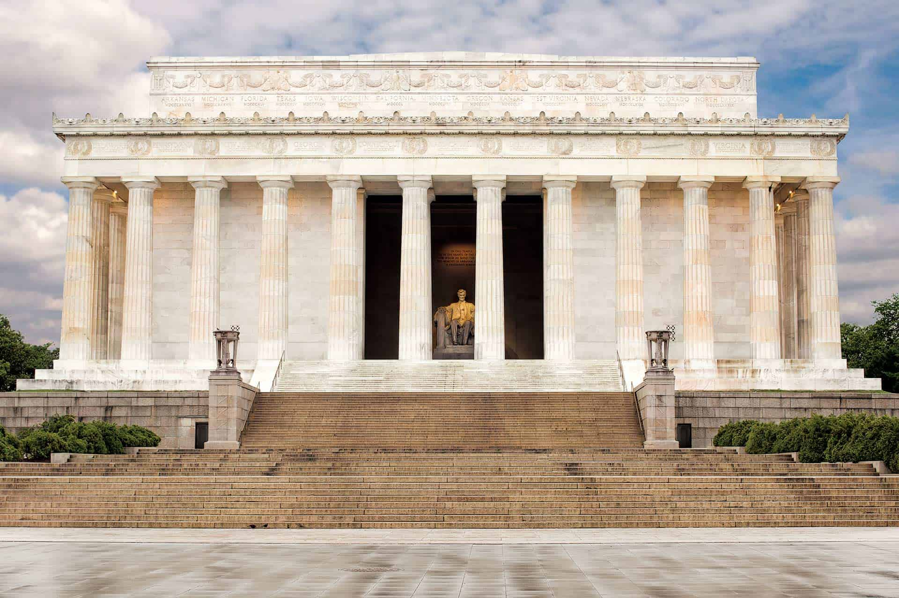
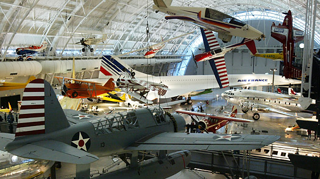
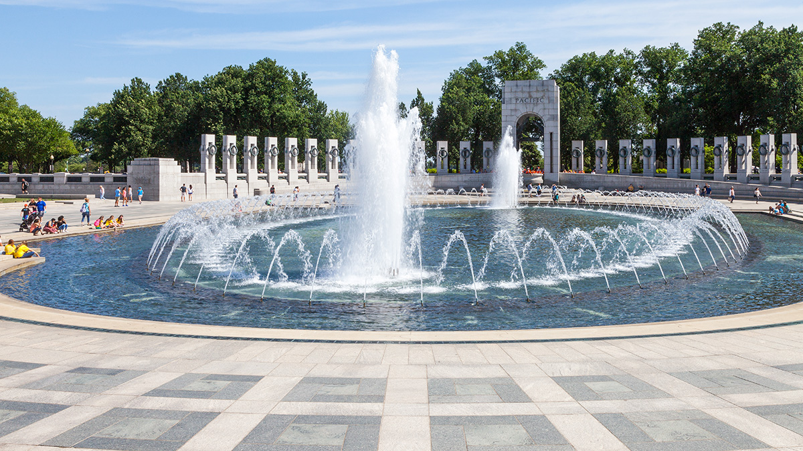

The Arlington National Cemetery This is the largest military cemetery in the United States. It is 624 acres of land where the dead lay of the nation’s conflicts have been buried. Folks who fought and dedicated their lives for our country, starting with the civil war were buried here. It is a very touching place and it is very historical as well. Tickets may be purchased to attend a guided tour of the cemetery. " id="myImg1" >
Arlington Cemetery
The U.S. Capitol Building The home of the US Congress and the seat of the legislative branch of the federal government. This building is a monument, a working office building, and one of the most recognizable landmarks that symbolize democracy in the world. All of the visitors can tour the historic areas of the Capitol on a guided tour. Guided tours are free, however, reservations are strongly recommended." id="myImg2" >
Capitol Building

The Lincoln Memorial The Lincoln Memorial is not the only monument in the city, it may just as well be the monument with the most striking historical and architectural background. This is a must-see as it admires Abraham Lincoln and also Henry Bacon’s powerful column design. It is most captivating to visit after dark when the attraction is lit and less crowded.">
Lincoln Memorial

The Smithsonian National Air and Space Museum This attraction holds a trove of celebrated aircraft, dating back from Amelia Earhart’s Lockheed Vega 5B, the Wright Bros. Flyer, and more. There is a flight simulator exhibit for visitors, at the IMAX theater of the museum. There is also a gift shop which provides the option for visitors to purchase gifts and memorabilia. It is recommended to arrive as early as possible because heavy crowds begin pouring in during the afternoon hours. Lastly, there is no fee to enter this museum.">
National Air and Space Museum
The Thomas Jefferson Memorial This presidential memorial is dedicated to Thomas Jefferson, one of America’s Founding Fathers. The architectural design of this monument resembles the Pantheon in Rome. In the night time, this memorial crates a stunning image on the water and in the springtime, cherry blossom trees shadow. This memorial is open to visitors 24 hours a day, every day of the year. It is free to visit this memorial.">
Thomas Jefferson Memorial
The Vietnam Veteran Memorial This war memorial pays tribute to the brave members of the U.S. Armed Forces who fought for our country in the Vietnam War. The fighters may have been killed or missing in action. This memorial contains three important sites. The Three Soldiers statue, the Vietnam Women’s Memorial and the Vietnam Veterans Memorial Wall are very special parts of this memorial that you have to see while visiting D.C.. This memorial is free and open to the public 24 hours a day. There are rangers on duty to answer questions. This memorial is located near Constitution Gardens on the National Mall.">
Vietnam Memorial
The Washington Monument Even if you’re in D.C. for a short amount of time, a visit to the Washington Monument is a must for any first-time visitor to this city. Once the tallest structure in the world, dating back, the Washington Monument is glass-encased and getting to the top floor gives you an undulating 360-degree view of the city. Besides, the Monument is free 24 hours a day for visitors to explore.">
Washington Monument
The White House Neighboring the Washington Monument, just across the street to the North, resides the White House. The White House is home to every U.S. president since the start of the 1800s. This special landmark symbolizes freedom and democracy. More than anything, it is a symbol of our president, country’s history, and the American people. Visitors can be in front of the white house gates, just to take a picture of the house, for no cost. Guided tour sessions are available at a cost, however, availability is limited and the House representative needs at least 21 days notice to schedule this fascinating tour. " >
White House

National World War II Memorial This memorial is dedicated to the Americans who died during the second World War. This memorial was dedicated in 2004 to the 400,000 plus Americans who gave their lives fighting for our country. At night, lights shining and waterfalls running, this memorial is exquisite. This memorial is located on the National Mall’s main drag, between the Washington Monument and Lincoln Memorial. This monument is also free to explore 24 hours a day.">
World War II Memorial